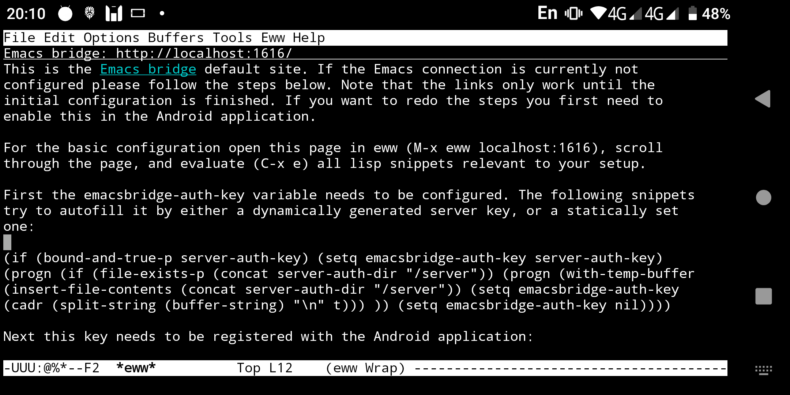
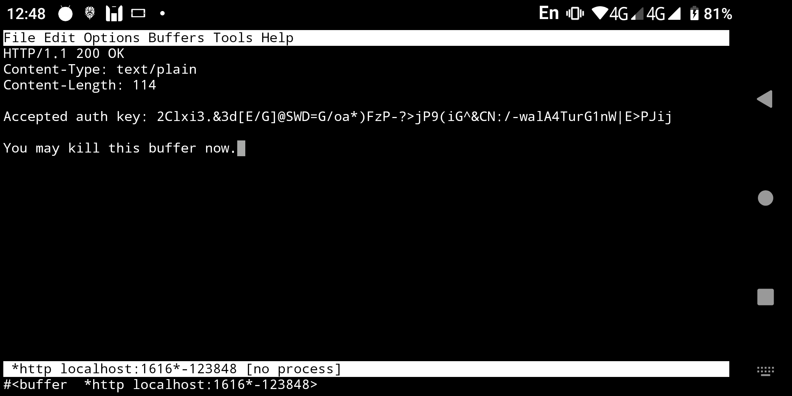
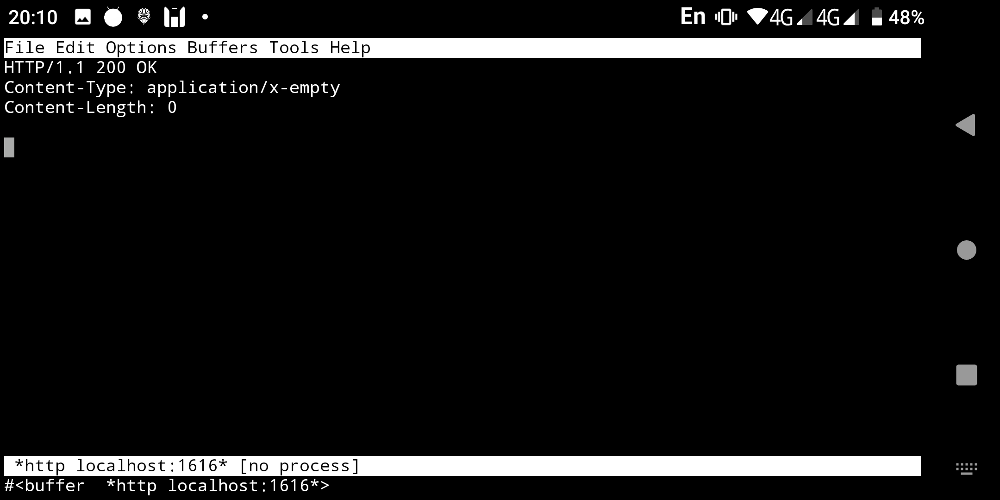
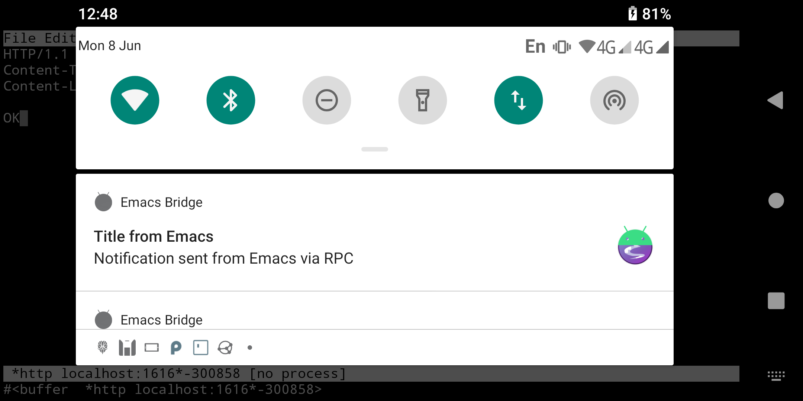
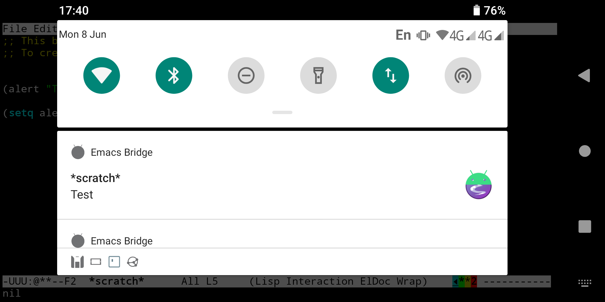
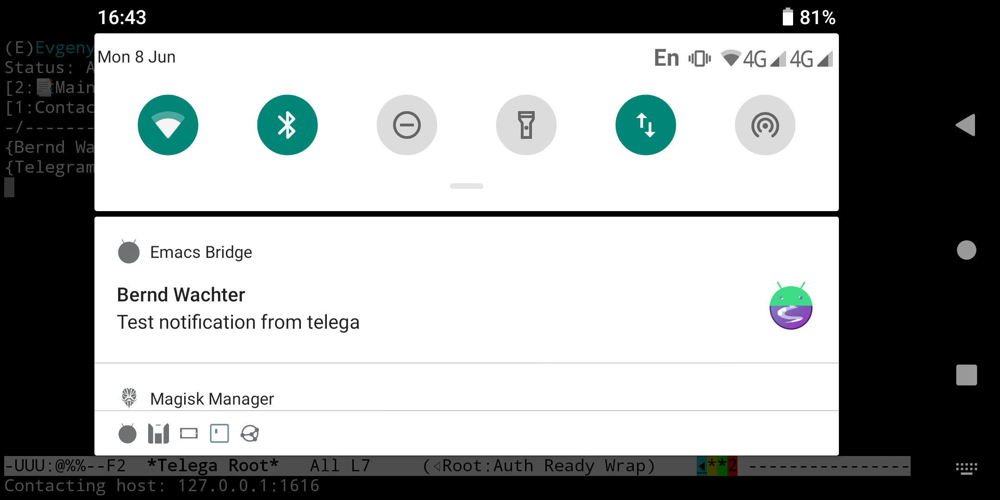

Table of Contents
1 emacsbridge
Emacsbridge is a tool to bridge some activities between the Emacs and Android world. It expects an Emacs daemon running and listening to TCP, typically in Termux. On Android side a foreground service is running to receive messages from Emacs.
Actions from Android side are sent as Lisp to be evaluated in Emacs through the Emacs daemon. Actions from Emacs are sent as JSON over HTTP.
Join the emacsbridge Telegram group to discuss emacsbridge, or read the on-device or Doxygen documentation.
1.1 Getting started
On Android access to Emacs' server socket is not available due to Androids security policies. Therefore Emacs needs to be configured to use the TCP server. Host and port should be manually set - the host to avoid having the server listening on anything but localhost, the port as it needs to be configured in the Android application.
Setting server-auth-key prevents the key from changing every emacs restart, but tends to cause interesting problems. A better approach is to use the dynamic key generation, and call emacsbridge-push-auth-key on every start, making sure the call succeeds (i.e., Android application is running).
(setq server-use-tcp 1
server-host "127.0.0.1"
server-port 60325)
Once Emacs is started with the TCP server the connection to the Android application needs to be set up. The easiest way for this is opening eww in Emacs, navigating to http://localhost:1616/ and evaluating the three lisp snippets there:

Figure 1: Setup page in eww
Doing so will first set the current server key in the Android application:

Figure 2: Confirmation of server key change
Then have the Android application test the connectivity, which sets emacsbridge-auth-token as custom variable (i.e, persistent), and marks the Android application as fully configured, which causes the RPC interfaces to required the auth token for reconfiguration. Pay attention to the status code and messages:

Figure 3: Successful initialisation
With that part of the setup completed a test notification can be triggered:

Figure 4: Test notification
To work correctly the Android application needs to run a foreground service. The UI can be closed at any time without impacting operation. The notification about the background service does nothing useful, and can be ignored by long-pressing on it.
When developing on the PC the socket connection can be used. Running the pc-init.sh script sets sane values (assuming an Emacs with a server is running locally). It can be downloaded from the integrated web server, adjusting address and port as needed:
curl -l localhost:1616/scripts/pc-init.sh|bash
1.2 Additional configuration
To interface with the RPC interface loading the emacsbridge-rpc library is recommended. It also is available through the embedded web server.
For notifications emacsbridge-rpc.el provides a backend to alert.el (local server). To use it as default backend configure alert-default-style, through customisation or directly:
(require 'alert-emacsbridge) (setq alert-default-style 'emacsbridge)
With this configured the following should trigger a notification on Android side:
(alert "Test")

Figure 5: Test notification from scratch
Other applications capable of using alert.el can make use of it. This shows a telega query notification:

Figure 6: Notification from telega